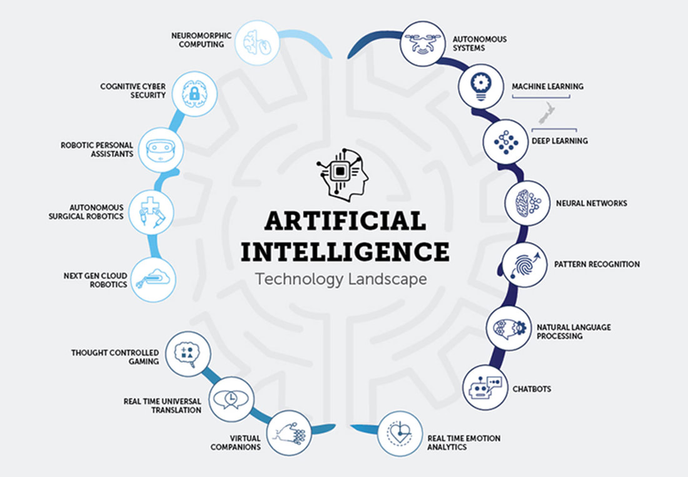

Chapter 3: Applications of AI
This chapter introduces the applications of AI, and some example on them.
This chapter introduces the applications of AI, and some example on them.
Artificial Intelligence (AI) has revolutionized the e-commerce industry by enhancing customers' shopping experiences and optimizing businesses' operations. AI-powered recommendation engines analyze customer behavior and preferences to suggest products, leading to increased sales and customer satisfaction. Additionally, AI-driven chatbots provide instant customer support, resolving queries and guiding shoppers through their purchasing journey.
Amazon uses AI to recommend products to its users based on their browsing history, past purchases, and preferences. This personalization boosts engagement and sales by showing customers items they are more likely to buy.
The next AI application is it's use in the betterment of education! AI in education is transforming how students learn and how educators teach. Adaptive learning platforms use AI to customize educational content based on each student’s strengths and weaknesses, ensuring a personalized learning experience. AI can also automate administrative tasks, allowing educators to focus more on teaching and less on paperwork.
Platforms like Simplilearn use AI algorithms to offer course recommendations and provide personalized feedback to students, enhancing their learning experience and outcomes.
The next AI application is a common one, i.e., AI in lifestyle. AI is integrated into various lifestyle applications, from personal assistants like Siri and Alexa to smart home devices. These technologies simplify daily tasks, offer entertainment options, manage schedules, and even control home appliances, making life more convenient and efficient.
Smart thermostats like Nest use AI to learn homeowners' temperature preferences and schedule patterns and automatically adjust settings for optimal comfort and energy savings.
AI significantly improves navigation systems, making travel safer and more efficient. Advanced algorithms process real-time traffic data, weather conditions, and historical patterns to provide accurate and timely route suggestions. AI also powers autonomous vehicles, which use sensors and machine learning to navigate roads and avoid obstacles.
Google Maps utilizes AI to analyze traffic conditions and provide the fastest routes, helping drivers save time and reduce fuel consumption.
AI enhances robots' capabilities, enabling them to perform complex tasks precisely and efficiently. In industries like manufacturing, AI-powered robots can work alongside humans, handling repetitive or dangerous tasks, thus increasing productivity and safety.
In automotive manufacturing, AI-driven robots are used for assembling parts, painting, and quality control, significantly speeding up production and ensuring high-quality output.
One of the critical AI applications is its integration with the healthcare and medical field. AI transforms healthcare by improving diagnostics, personalizing treatment plans, and optimizing patient care. AI algorithms can analyze medical images, predict disease outbreaks, and assist in drug discovery, enhancing the overall quality of healthcare services.
IBM Watson Health uses AI to analyze vast amounts of medical data, assisting doctors in diagnosing diseases and recommending personalized treatment plans.
Another notable AI application is gaming. AI significantly impacts the gaming industry, creating more realistic and engaging experiences. AI algorithms can generate intelligent behavior in non-player characters (NPCs), adapt to player actions, and enhance game environments.
In games like "The Last of Us Part II," AI-driven NPCs exhibit realistic behaviors, making the gameplay more immersive and challenging for players.
AI enhances social media platforms by personalizing content feeds, detecting fake news, and improving user engagement. AI algorithms analyze user behavior to recommend relevant posts, ads, and connections.
Facebook uses AI to curate personalized news feeds, showing users content that aligns with their interests and engagement patterns.
AI in marketing helps businesses understand customer behavior, optimize campaigns, and deliver personalized experiences. AI tools can analyze data to identify trends, segment audiences, and automate content delivery.
Email marketing platforms like Mailchimp use AI to analyze customer interactions and optimize email campaigns for better engagement and conversion rates.
